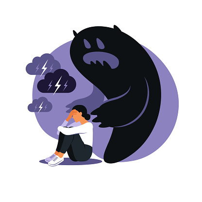

CONCIENTIZACION
La concienctización sobre la esquizofrenia busca reducir el estigma y los estereotipos negativos asociados con esta enfermedad. Esto puede ayudar a crear un entorno más comprensivo y solidario para las personas afectadas.
Promover la Educación: La concienciación implica proporcionar información precisa y basada en la evidencia sobre la esquizofrenia. Esto incluye describir los síntomas, las opciones de tratamiento y la perspectiva de recuperación. Fomentar el Apoyo: A través de la concienciación, se busca movilizar el apoyo de la comunidad, incluidos amigos, familiares y profesionales de la salud mental, para brindar un sistema de apoyo sólido a las personas con esquizofrenia. Sensibilizar sobre los Desafíos: La concienciación también se centra en sensibilizar a la sociedad sobre los desafíos que enfrentan las personas con esquizofrenia, como la discriminación, la falta de acceso a la atención médica y la necesidad de una atención compasiva. Fomentar la Comunicación Abierta: Al aumentar la concienciación, se alienta a las personas a hablar abiertamente sobre la salud mental y la esquizofrenia, lo que puede ayudar a reducir el estigma y promover la búsqueda de ayuda temprana. Inspirar la Acción: La concienciación también puede inspirar acciones concretas, como la promoción de políticas de salud mental más sólidas, el apoyo a organizaciones de salud mental y la participación en iniciativas de concienciación. En resumen, la concienciación sobre la esquizofrenia tiene como objetivo fundamental cambiar actitudes y comportamientos, reducir el estigma y promover un entorno más comprensivo y solidario para las personas que viven con esta enfermedad. La educación y la empatía desempeñan un papel clave en la construcción de una sociedad que respeta y apoya la salud mental de todos sus miembros.